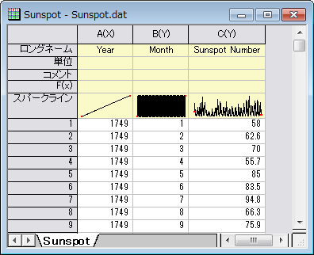
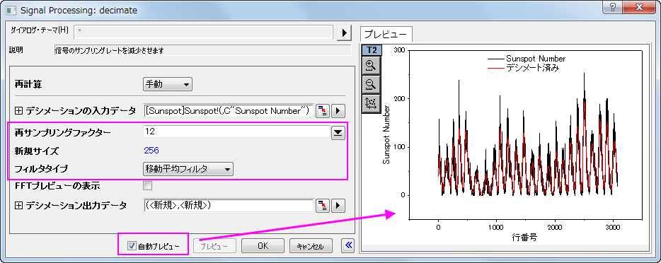
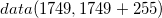
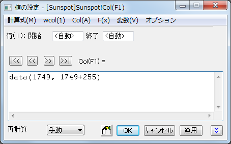
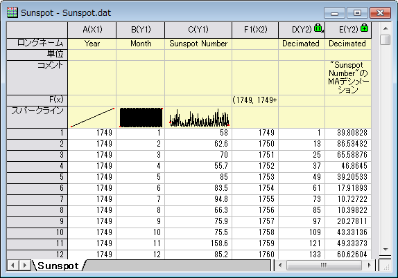
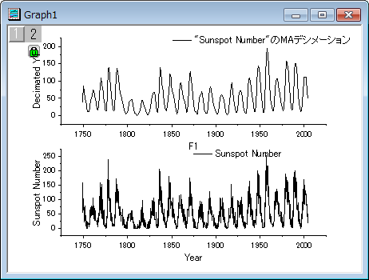
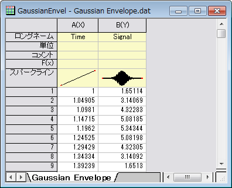
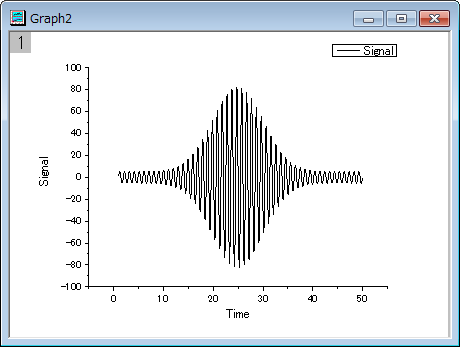
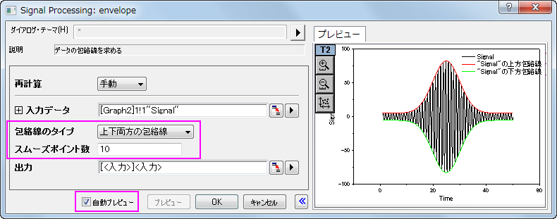
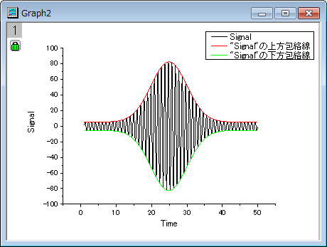

デシメーションと包絡線
Decimation-and-Signal-Envelope
サマリー
デシメーションは、N個ごとのサンプルを1つに統合しすることによって信号系列のサイズを小さくするために使用されます。
包絡線検出は、入力信号に包絡線を追加します。Originの包絡線ツールは、「上部」境界線と「下部」境界線の出力が可能です。
学習する項目
このチュートリアルでは、以下の項目について説明します。
- 入力信号系列のサイズ縮小のために信号を間引く
- 包絡線を追加するために包絡線検出を行う
デシメーション
このチュートリアルでは、太陽の黒点数データに対してデシメーションを実行します。太陽黒点数のソースデータは、200年以上にわたって毎月測定されたものです。ここでは、デシメーションを使用して、データセットを年ごとに1つの黒点数に削減しましょう。
- 新しいワークブックを作成し、<Origin インストールディレクトリ>\Samples\Signal Processing\Sunspot.dat をインポートします。
- 
- 列Aを選択して、右クリックし、コンテキストメニューから列XY属性の設定：Y列と選択してこの列の属性をYに設定します。これにより太陽の黒点の数はXデータとしてのA列に関連付けられなくなります。デシメーションの場合、単調なXデータが必要なため、この操作を行います。
- B、C列を選択して、解析：信号処理：デシメーションを選択し、デシメーション: decimateダイアログを開きます。
- ダイアログでは、再サンプリングファクターとして、12を入力し、フィルタタイプを移動平均フィルタに変更します。自動プレビューにチェックを付け、右パネルでプレビューを表示します。
- 
- OKをクリックして結果を出力します。
- ワークシートで、列D（結果から生成されたX列）を選択し、右クリックしてコンテキストメニューから挿入を選択します。再度列Dを右クリックして、列XY属性の設定：Y列を選択して、この列の属性をY とします。
- 挿入された列を選択して右クリックし、列XY属性の設定：X列を選択し、この列をXデータとします。列を再度右クリックして、列値の設定を選択し、列値の設定ダイアログボックスを開き、テキストボックスにを入力して、OKをクリックします。
- 
- 列Aを選択して、列XY属性の設定：X列と選択してこの列をX データとします。最終的なワークシートは下図のようになります。
- 
- Ctrlキーを押しながら、列Cと列Eを選択して、作図：基本の2Dグラフ：垂直2区分を選択します。下図のように、滑らかなデシメーション曲線を描くことができました。
- 
包絡線
- 新しいワークブックを用意します。
- メニューのデータ：ファイルからインポート：単一ASCIIインポートを選択し、<Origin インストールフォルダ>\Samples\Signal Processing\Gaussian Envelope.dat ファイルをインポートします。
- 
- B列を選択し、作図：基本の2Dグラフ：折れ線を選択して折れ線グラフを作図します。
- 
- このグラフをアクティブにして、解析：信号処理：包絡線を選択し、包括線: envelopeダイアログを開きます。
- ダイアログで、包絡線のタイプを上下両方の包絡線にし、スムーズポイント数を10に設定します。ダイアログの自動プレビューチェックボックスにチェックを付け、右パネルでプレビューできるようにします。
- 
- OKボタンをクリックして、上側と下側に包絡線を表示したグラフを作成します。
- 